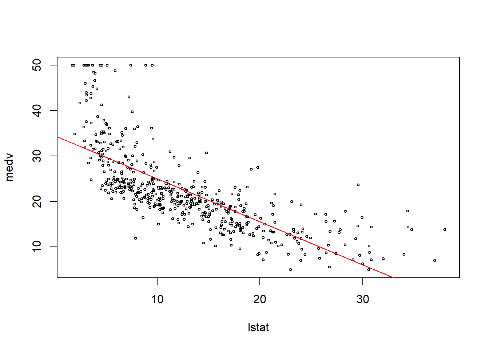

<!DOCTYPE html>
<html lang="es" xml:lang="es">
<head>

  <meta charset="utf-8" />
  <meta http-equiv="X-UA-Compatible" content="IE=edge" />
  <title>Capítulo 4 Regresion lineal | Ciencia de Datos</title>
  <meta name="description" content="BCRA" />
  <meta name="generator" content="bookdown 0.28 and GitBook 2.6.7" />

  <meta property="og:title" content="Capítulo 4 Regresion lineal | Ciencia de Datos" />
  <meta property="og:type" content="book" />
  
  <meta property="og:description" content="BCRA" />
  <meta name="github-repo" content="msangia/msangia.github" />

  <meta name="twitter:card" content="summary" />
  <meta name="twitter:title" content="Capítulo 4 Regresion lineal | Ciencia de Datos" />
  <meta name="twitter:site" content="@msangia" />
  <meta name="twitter:description" content="BCRA" />
  

<meta name="author" content="Máximo Sangiácomo" />


  <meta name="viewport" content="width=device-width, initial-scale=1" />
  <meta name="apple-mobile-web-app-capable" content="yes" />
  <meta name="apple-mobile-web-app-status-bar-style" content="black" />
  
  
<link rel="prev" href="conceptos.html"/>
<link rel="next" href="lasso.html"/>
<script src="libs/jquery-3.6.0/jquery-3.6.0.min.js"></script>
<script src="https://cdn.jsdelivr.net/npm/fuse.js@6.4.6/dist/fuse.min.js"></script>
<link href="libs/gitbook-2.6.7/css/style.css" rel="stylesheet" />
<link href="libs/gitbook-2.6.7/css/plugin-table.css" rel="stylesheet" />
<link href="libs/gitbook-2.6.7/css/plugin-bookdown.css" rel="stylesheet" />
<link href="libs/gitbook-2.6.7/css/plugin-highlight.css" rel="stylesheet" />
<link href="libs/gitbook-2.6.7/css/plugin-search.css" rel="stylesheet" />
<link href="libs/gitbook-2.6.7/css/plugin-fontsettings.css" rel="stylesheet" />
<link href="libs/gitbook-2.6.7/css/plugin-clipboard.css" rel="stylesheet" />


<link href="libs/anchor-sections-1.1.0/anchor-sections.css" rel="stylesheet" />
<link href="libs/anchor-sections-1.1.0/anchor-sections-hash.css" rel="stylesheet" />
<script src="libs/anchor-sections-1.1.0/anchor-sections.js"></script>
<html>
  <head>
	<link rel="shortcut icon" href="images/favicon.png" />
  </head>
  <body>
  </body>
</html>


<style type="text/css">
pre > code.sourceCode { white-space: pre; position: relative; }
pre > code.sourceCode > span { display: inline-block; line-height: 1.25; }
pre > code.sourceCode > span:empty { height: 1.2em; }
.sourceCode { overflow: visible; }
code.sourceCode > span { color: inherit; text-decoration: inherit; }
pre.sourceCode { margin: 0; }
@media screen {
div.sourceCode { overflow: auto; }
}
@media print {
pre > code.sourceCode { white-space: pre-wrap; }
pre > code.sourceCode > span { text-indent: -5em; padding-left: 5em; }
}
pre.numberSource code
  { counter-reset: source-line 0; }
pre.numberSource code > span
  { position: relative; left: -4em; counter-increment: source-line; }
pre.numberSource code > span > a:first-child::before
  { content: counter(source-line);
    position: relative; left: -1em; text-align: right; vertical-align: baseline;
    border: none; display: inline-block;
    -webkit-touch-callout: none; -webkit-user-select: none;
    -khtml-user-select: none; -moz-user-select: none;
    -ms-user-select: none; user-select: none;
    padding: 0 4px; width: 4em;
    color: #aaaaaa;
  }
pre.numberSource { margin-left: 3em; border-left: 1px solid #aaaaaa;  padding-left: 4px; }
div.sourceCode
  {   }
@media screen {
pre > code.sourceCode > span > a:first-child::before { text-decoration: underline; }
}
code span.al { color: #ff0000; font-weight: bold; } /* Alert */
code span.an { color: #60a0b0; font-weight: bold; font-style: italic; } /* Annotation */
code span.at { color: #7d9029; } /* Attribute */
code span.bn { color: #40a070; } /* BaseN */
code span.bu { } /* BuiltIn */
code span.cf { color: #007020; font-weight: bold; } /* ControlFlow */
code span.ch { color: #4070a0; } /* Char */
code span.cn { color: #880000; } /* Constant */
code span.co { color: #60a0b0; font-style: italic; } /* Comment */
code span.cv { color: #60a0b0; font-weight: bold; font-style: italic; } /* CommentVar */
code span.do { color: #ba2121; font-style: italic; } /* Documentation */
code span.dt { color: #902000; } /* DataType */
code span.dv { color: #40a070; } /* DecVal */
code span.er { color: #ff0000; font-weight: bold; } /* Error */
code span.ex { } /* Extension */
code span.fl { color: #40a070; } /* Float */
code span.fu { color: #06287e; } /* Function */
code span.im { } /* Import */
code span.in { color: #60a0b0; font-weight: bold; font-style: italic; } /* Information */
code span.kw { color: #007020; font-weight: bold; } /* Keyword */
code span.op { color: #666666; } /* Operator */
code span.ot { color: #007020; } /* Other */
code span.pp { color: #bc7a00; } /* Preprocessor */
code span.sc { color: #4070a0; } /* SpecialChar */
code span.ss { color: #bb6688; } /* SpecialString */
code span.st { color: #4070a0; } /* String */
code span.va { color: #19177c; } /* Variable */
code span.vs { color: #4070a0; } /* VerbatimString */
code span.wa { color: #60a0b0; font-weight: bold; font-style: italic; } /* Warning */
</style>

<style type="text/css">
/* Used with Pandoc 2.11+ new --citeproc when CSL is used */
div.csl-bib-body { }
div.csl-entry {
  clear: both;
}
.hanging div.csl-entry {
  margin-left:2em;
  text-indent:-2em;
}
div.csl-left-margin {
  min-width:2em;
  float:left;
}
div.csl-right-inline {
  margin-left:2em;
  padding-left:1em;
}
div.csl-indent {
  margin-left: 2em;
}
</style>

<link rel="stylesheet" href="css/style.css" type="text/css" />
<link rel="stylesheet" href="css/r4ds.css" type="text/css" />
</head>

<body>


  <div class="book without-animation with-summary font-size-2 font-family-1" data-basepath=".">

    <div class="book-summary">
      <nav role="navigation">

<ul class="summary">
<li><a href="./">Ciencia de Datos - BCRA</a></li>

<li class="divider"></li>
<li class="chapter" data-level="" data-path="index.html"><a href="index.html"><i class="fa fa-check"></i>Descripcion del curso</a></li>
<li class="chapter" data-level="1" data-path="intro.html"><a href="intro.html"><i class="fa fa-check"></i><b>1</b> Introduccion a R</a>
<ul>
<li class="chapter" data-level="1.1" data-path="intro.html"><a href="intro.html#primeros-pasos"><i class="fa fa-check"></i><b>1.1</b> Primeros pasos</a></li>
<li class="chapter" data-level="1.2" data-path="intro.html"><a href="intro.html#busacar-ayuda"><i class="fa fa-check"></i><b>1.2</b> Busacar ayuda</a></li>
<li class="chapter" data-level="1.3" data-path="intro.html"><a href="intro.html#tipos-de-datos"><i class="fa fa-check"></i><b>1.3</b> Tipos de datos</a></li>
<li class="chapter" data-level="1.4" data-path="intro.html"><a href="intro.html#limpieza-de-memoria"><i class="fa fa-check"></i><b>1.4</b> Limpieza de memoria</a></li>
<li class="chapter" data-level="1.5" data-path="intro.html"><a href="intro.html#asignación-de-valores"><i class="fa fa-check"></i><b>1.5</b> Asignación de valores</a></li>
<li class="chapter" data-level="1.6" data-path="intro.html"><a href="intro.html#operadores-aritméticos"><i class="fa fa-check"></i><b>1.6</b> Operadores aritméticos</a></li>
<li class="chapter" data-level="1.7" data-path="intro.html"><a href="intro.html#operadores-relacionales"><i class="fa fa-check"></i><b>1.7</b> Operadores relacionales</a></li>
<li class="chapter" data-level="1.8" data-path="intro.html"><a href="intro.html#operadores-lógicos"><i class="fa fa-check"></i><b>1.8</b> Operadores lógicos</a></li>
<li class="chapter" data-level="1.9" data-path="intro.html"><a href="intro.html#vectores"><i class="fa fa-check"></i><b>1.9</b> Vectores</a></li>
<li class="chapter" data-level="1.10" data-path="intro.html"><a href="intro.html#secuencias"><i class="fa fa-check"></i><b>1.10</b> Secuencias</a></li>
<li class="chapter" data-level="1.11" data-path="intro.html"><a href="intro.html#factores"><i class="fa fa-check"></i><b>1.11</b> Factores</a></li>
<li class="chapter" data-level="1.12" data-path="intro.html"><a href="intro.html#matrices"><i class="fa fa-check"></i><b>1.12</b> Matrices</a></li>
<li class="chapter" data-level="1.13" data-path="intro.html"><a href="intro.html#listas"><i class="fa fa-check"></i><b>1.13</b> Listas</a></li>
<li class="chapter" data-level="1.14" data-path="intro.html"><a href="intro.html#data-frames"><i class="fa fa-check"></i><b>1.14</b> Data frames</a></li>
<li class="chapter" data-level="1.15" data-path="intro.html"><a href="intro.html#r-base"><i class="fa fa-check"></i><b>1.15</b> R base</a></li>
<li class="chapter" data-level="1.16" data-path="intro.html"><a href="intro.html#apply-y-tapply"><i class="fa fa-check"></i><b>1.16</b> Apply y tapply</a></li>
<li class="chapter" data-level="1.17" data-path="intro.html"><a href="intro.html#map"><i class="fa fa-check"></i><b>1.17</b> Map</a></li>
<li class="chapter" data-level="1.18" data-path="intro.html"><a href="intro.html#loops"><i class="fa fa-check"></i><b>1.18</b> Loops</a></li>
<li class="chapter" data-level="1.19" data-path="intro.html"><a href="intro.html#condicionales"><i class="fa fa-check"></i><b>1.19</b> Condicionales</a></li>
<li class="chapter" data-level="1.20" data-path="intro.html"><a href="intro.html#funciones"><i class="fa fa-check"></i><b>1.20</b> Funciones</a>
<ul>
<li class="chapter" data-level="1.20.1" data-path="intro.html"><a href="intro.html#output-más-de-un-resultado"><i class="fa fa-check"></i><b>1.20.1</b> Output más de un resultado</a></li>
<li class="chapter" data-level="1.20.2" data-path="intro.html"><a href="intro.html#argumentos-con-valores-default"><i class="fa fa-check"></i><b>1.20.2</b> Argumentos con valores default</a></li>
</ul></li>
</ul></li>
<li class="chapter" data-level="2" data-path="bd.html"><a href="bd.html"><i class="fa fa-check"></i><b>2</b> Base de datos</a>
<ul>
<li class="chapter" data-level="2.1" data-path="bd.html"><a href="bd.html#directorio-de-trabajo"><i class="fa fa-check"></i><b>2.1</b> Directorio de trabajo</a></li>
<li class="chapter" data-level="2.2" data-path="bd.html"><a href="bd.html#cargar-datos"><i class="fa fa-check"></i><b>2.2</b> Cargar datos</a>
<ul>
<li class="chapter" data-level="2.2.1" data-path="bd.html"><a href="bd.html#ingrasar-datos-con-tidyverse"><i class="fa fa-check"></i><b>2.2.1</b> Ingrasar datos con <code>tidyverse</code></a></li>
<li class="chapter" data-level="2.2.2" data-path="bd.html"><a href="bd.html#bases-de-stata"><i class="fa fa-check"></i><b>2.2.2</b> Bases de Stata</a></li>
</ul></li>
<li class="chapter" data-level="2.3" data-path="bd.html"><a href="bd.html#problemas-de-imputación"><i class="fa fa-check"></i><b>2.3</b> Problemas de imputación</a></li>
<li class="chapter" data-level="2.4" data-path="bd.html"><a href="bd.html#exportar-datos"><i class="fa fa-check"></i><b>2.4</b> Exportar datos</a></li>
<li class="chapter" data-level="2.5" data-path="bd.html"><a href="bd.html#pipe"><i class="fa fa-check"></i><b>2.5</b> Pipe</a></li>
<li class="chapter" data-level="2.6" data-path="bd.html"><a href="bd.html#variables"><i class="fa fa-check"></i><b>2.6</b> Variables</a></li>
<li class="chapter" data-level="2.7" data-path="bd.html"><a href="bd.html#merge"><i class="fa fa-check"></i><b>2.7</b> Merge</a></li>
<li class="chapter" data-level="2.8" data-path="bd.html"><a href="bd.html#variables-group_by-mutate"><i class="fa fa-check"></i><b>2.8</b> Variables: group_by, mutate</a></li>
<li class="chapter" data-level="2.9" data-path="bd.html"><a href="bd.html#guardar-datos"><i class="fa fa-check"></i><b>2.9</b> Guardar datos</a></li>
<li class="chapter" data-level="2.10" data-path="bd.html"><a href="bd.html#valores-missing"><i class="fa fa-check"></i><b>2.10</b> Valores missing</a>
<ul>
<li class="chapter" data-level="2.10.1" data-path="bd.html"><a href="bd.html#eliminar-valores-missing"><i class="fa fa-check"></i><b>2.10.1</b> Eliminar valores missing</a></li>
</ul></li>
<li class="chapter" data-level="2.11" data-path="bd.html"><a href="bd.html#loop"><i class="fa fa-check"></i><b>2.11</b> Loop</a></li>
<li class="chapter" data-level="2.12" data-path="bd.html"><a href="bd.html#pivot-reshape"><i class="fa fa-check"></i><b>2.12</b> Pivot (Reshape)</a></li>
<li class="chapter" data-level="2.13" data-path="bd.html"><a href="bd.html#row-bind-append"><i class="fa fa-check"></i><b>2.13</b> Row bind (Append)</a></li>
<li class="chapter" data-level="2.14" data-path="bd.html"><a href="bd.html#strings"><i class="fa fa-check"></i><b>2.14</b> Strings</a></li>
<li class="chapter" data-level="2.15" data-path="bd.html"><a href="bd.html#fechas"><i class="fa fa-check"></i><b>2.15</b> Fechas</a>
<ul>
<li class="chapter" data-level="2.15.1" data-path="bd.html"><a href="bd.html#manipulación-de-fechas"><i class="fa fa-check"></i><b>2.15.1</b> Manipulación de fechas</a></li>
</ul></li>
<li class="chapter" data-level="2.16" data-path="bd.html"><a href="bd.html#análisis-de-datos"><i class="fa fa-check"></i><b>2.16</b> Análisis de datos</a>
<ul>
<li class="chapter" data-level="2.16.1" data-path="bd.html"><a href="bd.html#tablas"><i class="fa fa-check"></i><b>2.16.1</b> Tablas</a></li>
</ul></li>
<li class="chapter" data-level="2.17" data-path="bd.html"><a href="bd.html#group_by-summarise"><i class="fa fa-check"></i><b>2.17</b> group_by, summarise</a></li>
<li class="chapter" data-level="2.18" data-path="bd.html"><a href="bd.html#vector-de-resultados"><i class="fa fa-check"></i><b>2.18</b> Vector de resultados</a></li>
<li class="chapter" data-level="2.19" data-path="bd.html"><a href="bd.html#gráficos"><i class="fa fa-check"></i><b>2.19</b> Gráficos</a></li>
<li class="chapter" data-level="2.20" data-path="bd.html"><a href="bd.html#ggplot"><i class="fa fa-check"></i><b>2.20</b> GGPlot</a></li>
<li class="chapter" data-level="2.21" data-path="bd.html"><a href="bd.html#guardar-un-gráfico"><i class="fa fa-check"></i><b>2.21</b> Guardar un gráfico</a></li>
</ul></li>
<li class="chapter" data-level="3" data-path="conceptos.html"><a href="conceptos.html"><i class="fa fa-check"></i><b>3</b> Conceptos generales</a>
<ul>
<li class="chapter" data-level="3.1" data-path="conceptos.html"><a href="conceptos.html#estimacion"><i class="fa fa-check"></i><b>3.1</b> Estimacion</a></li>
<li class="chapter" data-level="3.2" data-path="conceptos.html"><a href="conceptos.html#prediccion"><i class="fa fa-check"></i><b>3.2</b> Prediccion</a></li>
<li class="chapter" data-level="3.3" data-path="conceptos.html"><a href="conceptos.html#inferencia"><i class="fa fa-check"></i><b>3.3</b> Inferencia</a></li>
<li class="chapter" data-level="3.4" data-path="conceptos.html"><a href="conceptos.html#metodos-parametricos"><i class="fa fa-check"></i><b>3.4</b> Metodos parametricos</a></li>
<li class="chapter" data-level="3.5" data-path="conceptos.html"><a href="conceptos.html#metodos-no-parametricos"><i class="fa fa-check"></i><b>3.5</b> Metodos no parametricos</a></li>
<li class="chapter" data-level="3.6" data-path="conceptos.html"><a href="conceptos.html#evaluacion-de-la-precision-del-modelo"><i class="fa fa-check"></i><b>3.6</b> Evaluacion de la precision del modelo</a>
<ul>
<li class="chapter" data-level="3.6.1" data-path="conceptos.html"><a href="conceptos.html#ajuste"><i class="fa fa-check"></i><b>3.6.1</b> Calidad del ajuste</a></li>
<li class="chapter" data-level="3.6.2" data-path="conceptos.html"><a href="conceptos.html#trade-off-sesgo-varianza"><i class="fa fa-check"></i><b>3.6.2</b> Trade-off Sesgo-Varianza</a></li>
<li class="chapter" data-level="3.6.3" data-path="conceptos.html"><a href="conceptos.html#clasificacion"><i class="fa fa-check"></i><b>3.6.3</b> Clasificacion</a></li>
<li class="chapter" data-level="3.6.4" data-path="conceptos.html"><a href="conceptos.html#confusion"><i class="fa fa-check"></i><b>3.6.4</b> Matriz de confusion</a></li>
<li class="chapter" data-level="3.6.5" data-path="conceptos.html"><a href="conceptos.html#roc"><i class="fa fa-check"></i><b>3.6.5</b> Curva ROC</a></li>
</ul></li>
<li class="chapter" data-level="3.7" data-path="conceptos.html"><a href="conceptos.html#resampling-methods"><i class="fa fa-check"></i><b>3.7</b> Resampling Methods</a>
<ul>
<li class="chapter" data-level="3.7.1" data-path="conceptos.html"><a href="conceptos.html#cv"><i class="fa fa-check"></i><b>3.7.1</b> Cross Validation</a></li>
<li class="chapter" data-level="3.7.2" data-path="conceptos.html"><a href="conceptos.html#bootstrap"><i class="fa fa-check"></i><b>3.7.2</b> Bootstrap</a></li>
</ul></li>
<li class="chapter" data-level="3.8" data-path="conceptos.html"><a href="conceptos.html#resumen"><i class="fa fa-check"></i><b>3.8</b> Resumen</a></li>
</ul></li>
<li class="chapter" data-level="4" data-path="mco.html"><a href="mco.html"><i class="fa fa-check"></i><b>4</b> Regresion lineal</a>
<ul>
<li class="chapter" data-level="4.1" data-path="mco.html"><a href="mco.html#relacion-entre-estimacion-optima-y-prediccion-optima"><i class="fa fa-check"></i><b>4.1</b> Relacion entre estimacion optima y prediccion optima</a></li>
<li class="chapter" data-level="4.2" data-path="mco.html"><a href="mco.html#aplicacion-practica"><i class="fa fa-check"></i><b>4.2</b> Aplicacion practica</a></li>
</ul></li>
<li class="chapter" data-level="5" data-path="lasso.html"><a href="lasso.html"><i class="fa fa-check"></i><b>5</b> LASSO</a>
<ul>
<li class="chapter" data-level="5.1" data-path="lasso.html"><a href="lasso.html#aplicacion-practica-1"><i class="fa fa-check"></i><b>5.1</b> Aplicacion practica</a></li>
</ul></li>
<li class="chapter" data-level="6" data-path="logit.html"><a href="logit.html"><i class="fa fa-check"></i><b>6</b> Logit</a>
<ul>
<li class="chapter" data-level="6.1" data-path="logit.html"><a href="logit.html#modelo-logit"><i class="fa fa-check"></i><b>6.1</b> Modelo <em>logit</em></a>
<ul>
<li class="chapter" data-level="6.1.1" data-path="logit.html"><a href="logit.html#interpretacion-de-coeficientes-en-el-modelo-logit"><i class="fa fa-check"></i><b>6.1.1</b> Interpretacion de coeficientes en el modelo <em>logit</em></a></li>
</ul></li>
<li class="chapter" data-level="6.2" data-path="logit.html"><a href="logit.html#aplicacion-practica-2"><i class="fa fa-check"></i><b>6.2</b> Aplicacion practica</a></li>
</ul></li>
<li class="chapter" data-level="7" data-path="arboles.html"><a href="arboles.html"><i class="fa fa-check"></i><b>7</b> Arboles de decision</a>
<ul>
<li class="chapter" data-level="7.1" data-path="arboles.html"><a href="arboles.html#classification-and-regression-tree-cart"><i class="fa fa-check"></i><b>7.1</b> <em>Classification and Regression Tree</em> (CART)</a></li>
<li class="chapter" data-level="7.2" data-path="arboles.html"><a href="arboles.html#bagging"><i class="fa fa-check"></i><b>7.2</b> Bagging</a></li>
<li class="chapter" data-level="7.3" data-path="arboles.html"><a href="arboles.html#random-forest"><i class="fa fa-check"></i><b>7.3</b> Random Forest</a></li>
<li class="chapter" data-level="7.4" data-path="arboles.html"><a href="arboles.html#boosting"><i class="fa fa-check"></i><b>7.4</b> Boosting</a>
<ul>
<li class="chapter" data-level="7.4.1" data-path="arboles.html"><a href="arboles.html#ada-boost"><i class="fa fa-check"></i><b>7.4.1</b> Ada Boost</a></li>
</ul></li>
<li class="chapter" data-level="7.5" data-path="arboles.html"><a href="arboles.html#aplicacion-practica-3"><i class="fa fa-check"></i><b>7.5</b> Aplicacion practica</a>
<ul>
<li class="chapter" data-level="7.5.1" data-path="arboles.html"><a href="arboles.html#arboles-de-clasificacion"><i class="fa fa-check"></i><b>7.5.1</b> Arboles de clasificacion</a></li>
<li class="chapter" data-level="7.5.2" data-path="arboles.html"><a href="arboles.html#compara"><i class="fa fa-check"></i><b>7.5.2</b> Comparacion de modelos para clasificacion</a></li>
<li class="chapter" data-level="7.5.3" data-path="arboles.html"><a href="arboles.html#arboles-de-regresion"><i class="fa fa-check"></i><b>7.5.3</b> Arboles de regresion</a></li>
<li class="chapter" data-level="7.5.4" data-path="arboles.html"><a href="arboles.html#bagging-y-random-forests"><i class="fa fa-check"></i><b>7.5.4</b> Bagging y Random Forests</a></li>
<li class="chapter" data-level="7.5.5" data-path="arboles.html"><a href="arboles.html#boosting-1"><i class="fa fa-check"></i><b>7.5.5</b> Boosting</a></li>
</ul></li>
</ul></li>
<li class="chapter" data-level="8" data-path="nnet.html"><a href="nnet.html"><i class="fa fa-check"></i><b>8</b> Neural Networks</a>
<ul>
<li class="chapter" data-level="8.1" data-path="nnet.html"><a href="nnet.html#single-layer-neural-networks"><i class="fa fa-check"></i><b>8.1</b> Single Layer Neural Networks</a></li>
</ul></li>
<li class="chapter" data-level="9" data-path="cluster.html"><a href="cluster.html"><i class="fa fa-check"></i><b>9</b> Analisis de clusters</a>
<ul>
<li class="chapter" data-level="9.1" data-path="cluster.html"><a href="cluster.html#k-means-clustering"><i class="fa fa-check"></i><b>9.1</b> K-Means Clustering</a></li>
<li class="chapter" data-level="9.2" data-path="cluster.html"><a href="cluster.html#aplicacion-practica-4"><i class="fa fa-check"></i><b>9.2</b> Aplicacion practica</a></li>
</ul></li>
<li class="chapter" data-level="" data-path="bibliografia.html"><a href="bibliografia.html"><i class="fa fa-check"></i>Bibliografia</a></li>
<li class="divider"></li>
<li><a href="./" target="blank">Maximo Sangiacomo - GMyP</a></li>

</ul>

      </nav>
    </div>

    <div class="book-body">
      <div class="body-inner">
        <div class="book-header" role="navigation">
          <h1>
            <i class="fa fa-circle-o-notch fa-spin"></i><a href="./">Ciencia de Datos</a>
          </h1>
        </div>

        <div class="page-wrapper" tabindex="-1" role="main">
          <div class="page-inner">

            <section class="normal" id="section-">
<link href="css/style.css" rel="stylesheet">
<div class="hero-image-container"> 
  
</div>
<div id="mco" class="section level1 hasAnchor" number="4">
<h1><span class="header-section-number">Capítulo 4</span> Regresion lineal<a href="mco.html#mco" class="anchor-section" aria-label="Anchor link to header"></a></h1>
<p>En <em>machine learning</em> el objetivo principal no es estimar y hacer inferencia como en la econometría clásica sino hacer predicciones/clasificar. El modelo de regresión lineal es una herramienta útil para predecir cuando la variable de respuesta es cuantitativa.</p>
<p><strong>Modelo</strong> lineal simple</p>
<p><span class="math display" id="eq:ols">\[\begin{equation}
\tag{4.1}
  y = \beta_0 + \beta_1 x_1 + u
\end{equation}\]</span></p>
<p>donde <span class="math inline">\(u\)</span> es un término de error aleatorio que captura todo lo que no puede representarse con este modelo simple (factores no observables, errores de medición, etc.).</p>
<p><strong>Modelo</strong> lineal múltiple</p>
<p>En notación matricial:<a href="#fn12" class="footnote-ref" id="fnref12"><sup>12</sup></a></p>
<p><span class="math display" id="eq:ols2">\[\begin{equation}
\tag{4.2}
  Y = X \beta + u
\end{equation}\]</span></p>
<p>donde la primera columna de <span class="math inline">\(X\)</span> es la constante.</p>
<p><strong>Método</strong> de Mínimos Cuadrados Ordinarios <span class="math inline">\((MCO)\)</span></p>
<p><span class="math display" id="eq:beta">\[\begin{equation}
\tag{4.3}
\hat{\beta} = min \sum_{i=1}^{n}e_i^2  
\end{equation}\]</span></p>
<p><span class="math display" id="eq:beta2">\[\begin{equation}
\tag{4.4}
\hat{\beta} = (X&#39;X)^{-1}X&#39;Y  
\end{equation}\]</span></p>
<div class="figure" style="text-align: center"><span style="display:block;" id="fig:mco"></span>

<p class="caption">
Figura 4.1: Modelo lineal y MCO
</p>
</div>
<p><strong>Teorema de Gauss/Markov (TGM)</strong>: Bajo los supuestos clásicos el estimador de <span class="math inline">\(MCO\)</span> es el mejor dentro de los lineales e insesgados (MELI).</p>
<p><strong>Definición</strong>: el <span class="math inline">\(R^2\)</span> mide la proporción de la variabilidad de <span class="math inline">\(Y\)</span> explicada por el modelo. <span class="math inline">\(R^2 \in [0,1]\)</span>.</p>
<p><span class="math display" id="eq:r2">\[\begin{equation}
\tag{4.5}
R^2 = 1 - \frac{SCR}{SCT}
\end{equation}\]</span></p>
<p>Dado que la suma de cuadrados totales es igual a la suma de cuadrados explicada y la suma de cuadrados residual (<span class="math inline">\(SCT = SCE + SCR\)</span>) y que <span class="math inline">\(SCT\)</span> es una magnitud fija, por lo tanto, <span class="math inline">\(MCO\)</span> <strong>maximiza el</strong> <span class="math inline">\(R^2\)</span>.</p>
<div id="relacion-entre-estimacion-optima-y-prediccion-optima" class="section level2 hasAnchor" number="4.1">
<h2><span class="header-section-number">4.1</span> Relacion entre estimacion optima y prediccion optima<a href="mco.html#relacion-entre-estimacion-optima-y-prediccion-optima" class="anchor-section" aria-label="Anchor link to header"></a></h2>
<p>Dado:</p>
<p><span class="math display" id="eq:ols3">\[\begin{equation}
\tag{4.6}
Y_i = X_i^{&#39;} \beta + u_i
\end{equation}\]</span></p>
<p>con <span class="math inline">\(i=1,...,n\)</span></p>
<p>La predicción de <span class="math inline">\(Y\)</span> se define como:</p>
<p><span class="math display" id="eq:ols4">\[\begin{equation}
\tag{4.7}
\hat{Y_i} \equiv X_i^{&#39;} \hat{\beta}
\end{equation}\]</span></p>
<p>Donde <span class="math inline">\(\hat{Y_i}\)</span> es el <strong>predictor</strong> (variable aleatoria) y <span class="math inline">\(\hat{\beta}\)</span> es el <strong>estimador</strong> (parámetro). Por el TGM:</p>
<ul>
<li><p><span class="math inline">\(E(\hat{Y_i}) = X_i^{&#39;} \beta\)</span> (predictor insesgado)</p></li>
<li><p><span class="math inline">\(V(\hat{Y_i}) = X_i^{&#39;} V(\hat{\beta})X_i = \sigma^2X_i^{&#39;}(X&#39;X)^{-1}X_i\)</span></p></li>
</ul>
<p>donde <span class="math inline">\(V(\hat{\beta}) = \sigma^2(X&#39;X)^{-1}\)</span></p>
<p>Entonces, si el <em>estimador</em> <span class="math inline">\(\hat{\beta}\)</span> es insegado y de varianza mínima, <span class="math inline">\(\hat{Y_i}\)</span> es un <em>predictor</em> insegado y de varianza mínima, ambos en la clase de estimadores/predictores lineales e insesgados.</p>
<p>El resultado anterior surge del hecho que predecir requiere estimar (en este caso <span class="math inline">\(\beta\)</span>). Retomamos el <span class="math inline">\(EMC\)</span> en el caso de los <strong>estimadores</strong>:</p>
<p><span class="math display" id="eq:ecm">\[\begin{equation}
\tag{4.8}
EMC(\hat{\beta}) \equiv E(\hat{\beta} - \beta)^2
\end{equation}\]</span></p>
<p>El <span class="math inline">\(EMC\)</span> mide en promedio cuan lejos esta <span class="math inline">\(\hat{\beta}\)</span> (estimador) de <span class="math inline">\(\beta\)</span>, el parámetro que se quiere estimar.</p>
<p>Recordar que por definición:</p>
<ul>
<li><p><span class="math inline">\(V(\hat{\beta}) \equiv E(\hat{\beta} - E(\hat{\beta}))^2\)</span> (dispersión)</p></li>
<li><p><span class="math inline">\(Sesgo(\hat{\beta}) \equiv E(\hat{\beta}) - \beta\)</span> (centro)</p></li>
</ul>
<p>A partir de <a href="mco.html#eq:ecm">(4.8)</a> y las definiciones anteriores reescribimos el <span class="math inline">\(EMC\)</span> en términos de la descomposición sesgo-varianza:</p>
<p><span class="math display" id="eq:ecm2">\[\begin{equation}
\tag{4.9}
EMC(\hat{\beta}) = Sesgo^2(\hat{\beta}) + V(\hat{\beta})
\end{equation}\]</span></p>
<p>Es decir, cuán mal <strong>estima</strong> <span class="math inline">\(\hat{\beta}\)</span> depende de cuán descentrado está en relación a la verdad (sesgo) más cuán disperso es en relación a su propio centro (varianza).</p>
<p>Para ver la relación entre el error de estimación y el error de predicción se define el <strong>error de pronóstico</strong> como:</p>
<p><span class="math display" id="eq:err">\[\begin{equation}
\tag{4.10}
Err(\hat{Y}) \equiv E(Y - \hat{Y})^2
\end{equation}\]</span></p>
<p>Como vimos antes, dado el modelo genérico<a href="#fn13" class="footnote-ref" id="fnref13"><sup>13</sup></a> <span class="math inline">\(Y = f(X) + u\)</span> donde <span class="math inline">\(E(u) = 0\)</span> y <span class="math inline">\(V(u) = \sigma^2\)</span>:</p>
<ul>
<li><p><span class="math inline">\(f(X)\)</span> es la parte sistemática</p></li>
<li><p><span class="math inline">\(u\)</span> la parte no sistemática</p></li>
</ul>
<div class="infobox note">
<p>Resultado importante en <strong>teoría de la predicción:</strong> si se quiere predecir una variable aleatoria <span class="math inline">\(Y\)</span> con una constante <span class="math inline">\(m\)</span> el mejor predictor es su esperanza,<a href="#fn14" class="footnote-ref" id="fnref14"><sup>14</sup></a> es decir, <span class="math inline">\(m = E(Y)\)</span>.<a href="#fn15" class="footnote-ref" id="fnref15"><sup>15</sup></a></p>
</div>
<p>Entonces, si <span class="math inline">\(E(Y) = f(X)\)</span>, <span class="math inline">\(u\)</span> es no observable y <span class="math inline">\(f(X)\)</span> es conocida, <span class="math inline">\(f(X)\)</span> es el mejor predictor porque, como se dijo arriba, el mejor predictor de una variable aleatoria es su esperanza.</p>
<p>En la práctica <span class="math inline">\(f(X)\)</span> es desconocida y, por lo tanto, se debe estimar <span class="math inline">\(\hat{f}(X)\)</span>.</p>
<p><span class="math display" id="eq:err2">\[\begin{equation}
\tag{4.11}
Err(\hat{Y}) = E(Y - \hat{f})^2
\end{equation}\]</span></p>
<p><span class="math display" id="eq:err3">\[\begin{equation}
\tag{4.12}
Err(Y - \hat{f}) = EMC(\hat{f}) + \sigma^2
\end{equation}\]</span></p>
<p>En términos de la ecuación <a href="conceptos.html#eq:ri">(3.3)</a> el error de pronóstico es la suma de un error reducible <span class="math inline">\((EMC)\)</span> y otro irreducible <span class="math inline">\((\sigma^2)\)</span>. Además, notar que el error de predicción y el <span class="math inline">\(EMC\)</span> difieren solo por una constante <span class="math inline">\(\sigma^2\)</span>.</p>
<p>Nuevamente, puede verse la relación entre predicción y estimación. <em>Predecir</em> correctamente <span class="math inline">\((Err(Y - \hat{f}))\)</span> requiere <em>estimar</em> <span class="math inline">\((EMC(\hat{f}))\)</span> correctamente (porque <span class="math inline">\(\sigma^2\)</span> no se puede controlar). Es decir, tener bajo sesgo y baja varianza. Utilizando la descomposición:</p>
<p><span class="math display" id="eq:err4">\[\begin{equation}
\tag{4.13}
Err(Y-\hat{f}) = \underbrace{Sesgo^2(\hat{f}) + V(\hat{f})}_{\text{EMC}} + \sigma^2
\end{equation}\]</span></p>
<p>En la econometría tradicional si <span class="math inline">\(\hat{f}\)</span> es insesgado minimizar el error de pronóstico es minimizar la varianza. <em>Machine learning</em> hace uso de que estrategias sesgadas pueden implicar una reducción drástica en la varianza, por lo tanto, puede ser que el mínimo <span class="math inline">\(EMC\)</span> ocurra para predictores sesgados.</p>
</div>
<div id="aplicacion-practica" class="section level2 hasAnchor" number="4.2">
<h2><span class="header-section-number">4.2</span> Aplicacion practica<a href="mco.html#aplicacion-practica" class="anchor-section" aria-label="Anchor link to header"></a></h2>
<div class="infobox tip">
<p>Para hacer tablas con los resultados de las regresiones se puede utilizar el paquete <code>stargazer</code>. Algunas referencias en este <a href="https://cran.r-project.org/web/packages/stargazer/vignettes/stargazer.pdf">documento</a> y en este <a href="https://www.jakeruss.com/cheatsheets/stargazer/">blog</a>.</p>
</div>
<p>La biblioteca <code>ISLR2</code> contiene la base de datos de <code>Boston</code>, que registra <code>medv</code> (mediana del valor de las casas en miles de USD) para <span class="math inline">\(506\)</span> distritos censales en Boston. Buscaremos predecir <code>medv</code> usando <span class="math inline">\(12\)</span> predictores como <code>rm</code> (número promedio de habitaciones por casa), <code>age</code> (edad promedio de las casas) y <code>lstat</code> (porcentaje de hogares con bajo <em>status</em> socioeconómico).</p>
<div class="sourceCode" id="cb361"><pre class="sourceCode r"><code class="sourceCode r"><span id="cb361-1"><a href="mco.html#cb361-1" aria-hidden="true" tabindex="-1"></a><span class="fu">library</span>(MASS)</span>
<span id="cb361-2"><a href="mco.html#cb361-2" aria-hidden="true" tabindex="-1"></a><span class="fu">library</span>(ISLR2)</span>
<span id="cb361-3"><a href="mco.html#cb361-3" aria-hidden="true" tabindex="-1"></a><span class="fu">head</span>(Boston)</span></code></pre></div>
<pre><code>##      crim zn indus chas   nox    rm  age    dis rad tax ptratio lstat medv
## 1 0.00632 18  2.31    0 0.538 6.575 65.2 4.0900   1 296    15.3  4.98 24.0
## 2 0.02731  0  7.07    0 0.469 6.421 78.9 4.9671   2 242    17.8  9.14 21.6
## 3 0.02729  0  7.07    0 0.469 7.185 61.1 4.9671   2 242    17.8  4.03 34.7
## 4 0.03237  0  2.18    0 0.458 6.998 45.8 6.0622   3 222    18.7  2.94 33.4
## 5 0.06905  0  2.18    0 0.458 7.147 54.2 6.0622   3 222    18.7  5.33 36.2
## 6 0.02985  0  2.18    0 0.458 6.430 58.7 6.0622   3 222    18.7  5.21 28.7</code></pre>
<p>Comenzaremos usando la función <code>lm()</code> para ajustar un modelo de regresión lineal simple, con <code>medv</code> como respuesta y <code>lstat</code> como predictor.<a href="#fn16" class="footnote-ref" id="fnref16"><sup>16</sup></a></p>
<div class="sourceCode" id="cb363"><pre class="sourceCode r"><code class="sourceCode r"><span id="cb363-1"><a href="mco.html#cb363-1" aria-hidden="true" tabindex="-1"></a>lm.fit1 <span class="ot">=</span> <span class="fu">lm</span>(medv <span class="sc">~</span> lstat, <span class="at">data =</span> Boston)</span>
<span id="cb363-2"><a href="mco.html#cb363-2" aria-hidden="true" tabindex="-1"></a><span class="fu">summary</span>(lm.fit1)</span></code></pre></div>
<pre><code>## 
## Call:
## lm(formula = medv ~ lstat, data = Boston)
## 
## Residuals:
##     Min      1Q  Median      3Q     Max 
## -15.168  -3.990  -1.318   2.034  24.500 
## 
## Coefficients:
##             Estimate Std. Error t value Pr(&gt;|t|)    
## (Intercept) 34.55384    0.56263   61.41   &lt;2e-16 ***
## lstat       -0.95005    0.03873  -24.53   &lt;2e-16 ***
## ---
## Signif. codes:  0 &#39;***&#39; 0.001 &#39;**&#39; 0.01 &#39;*&#39; 0.05 &#39;.&#39; 0.1 &#39; &#39; 1
## 
## Residual standard error: 6.216 on 504 degrees of freedom
## Multiple R-squared:  0.5441, Adjusted R-squared:  0.5432 
## F-statistic: 601.6 on 1 and 504 DF,  p-value: &lt; 2.2e-16</code></pre>
<div class="sourceCode" id="cb365"><pre class="sourceCode r"><code class="sourceCode r"><span id="cb365-1"><a href="mco.html#cb365-1" aria-hidden="true" tabindex="-1"></a><span class="fu">names</span>(lm.fit1)</span></code></pre></div>
<pre><code>##  [1] &quot;coefficients&quot;  &quot;residuals&quot;     &quot;effects&quot;       &quot;rank&quot;         
##  [5] &quot;fitted.values&quot; &quot;assign&quot;        &quot;qr&quot;            &quot;df.residual&quot;  
##  [9] &quot;xlevels&quot;       &quot;call&quot;          &quot;terms&quot;         &quot;model&quot;</code></pre>
<div class="sourceCode" id="cb367"><pre class="sourceCode r"><code class="sourceCode r"><span id="cb367-1"><a href="mco.html#cb367-1" aria-hidden="true" tabindex="-1"></a><span class="fu">attach</span>(Boston)</span>
<span id="cb367-2"><a href="mco.html#cb367-2" aria-hidden="true" tabindex="-1"></a><span class="fu">plot</span>(lstat, medv, <span class="at">cex=</span>.<span class="dv">5</span>)</span>
<span id="cb367-3"><a href="mco.html#cb367-3" aria-hidden="true" tabindex="-1"></a><span class="fu">abline</span>(lm.fit1, <span class="at">col =</span> <span class="st">&#39;red&#39;</span>)</span></code></pre></div>
<p></p>
<p>A continuación se examinan algunos gráficos de diagnóstico con la función <code>plot()</code>. En general, este comando producirá un gráfico a la vez (presionando <em>Enter</em> se generará el siguiente gráfico). Sin embargo, se pueden ver los cuatro gráficos juntos con las funciones <code>par()</code> y <code>mfrow()</code>, que le dicen a <code>R</code> que divida la pantalla de visualización en paneles separados. Por ejemplo, <code>par(mfrow = c(2, 2))</code> divide la región del gráfico en una cuadrícula de paneles de <span class="math inline">\(2 \times 2\)</span>.</p>
<ul>
<li><strong>Residuals vs. fitted values:</strong> residuos vs. valores ajustados se utiliza para detectar patrones de variables omitidas, heterocedasticidad, etc.</li>
<li><strong>Scale Location:</strong> residuos estandarizados vs. valores ajustados. Similar al anterior y se utiliza para detectar patrones en los residuos.</li>
<li><strong>Normal Q-Q:</strong> cuantiles teóricos de la distribución normal estándar vs. cuantiles reales de residuos estandarizados. Se utiliza para evaluar la normalidad de los errores.</li>
<li><strong>Residuals vs. Leverage:</strong> el <em>leverage</em> es una medida de cuán influyente es una observación en el valor de los coeficientes. Este gráfico se utiliza para detectar las (posibles) observaciones influyentes y los valores atípicos al mismo tiempo.</li>
</ul>
<div class="sourceCode" id="cb368"><pre class="sourceCode r"><code class="sourceCode r"><span id="cb368-1"><a href="mco.html#cb368-1" aria-hidden="true" tabindex="-1"></a><span class="fu">par</span>(<span class="at">mfrow =</span> <span class="fu">c</span>(<span class="dv">2</span>, <span class="dv">2</span>))</span>
<span id="cb368-2"><a href="mco.html#cb368-2" aria-hidden="true" tabindex="-1"></a><span class="fu">plot</span>(lm.fit1)</span></code></pre></div>
<p></p>
<p>Para obtener la predicción y el <span class="math inline">\(EMC\)</span>:</p>
<div class="sourceCode" id="cb369"><pre class="sourceCode r"><code class="sourceCode r"><span id="cb369-1"><a href="mco.html#cb369-1" aria-hidden="true" tabindex="-1"></a>medv_hat <span class="ot">=</span> <span class="fu">predict</span>(lm.fit1, <span class="at">data =</span> Boston)</span>
<span id="cb369-2"><a href="mco.html#cb369-2" aria-hidden="true" tabindex="-1"></a>emc <span class="ot">=</span> <span class="fu">mean</span>((medv <span class="sc">-</span> medv_hat)<span class="sc">^</span><span class="dv">2</span>)</span>
<span id="cb369-3"><a href="mco.html#cb369-3" aria-hidden="true" tabindex="-1"></a>emc</span></code></pre></div>
<pre><code>## [1] 38.48297</code></pre>
<p>Regresión lineal múltiple:</p>
<div class="sourceCode" id="cb371"><pre class="sourceCode r"><code class="sourceCode r"><span id="cb371-1"><a href="mco.html#cb371-1" aria-hidden="true" tabindex="-1"></a>lm.fit2 <span class="ot">=</span> <span class="fu">lm</span>(medv <span class="sc">~</span> lstat <span class="sc">+</span> age, <span class="at">data =</span> Boston)</span>
<span id="cb371-2"><a href="mco.html#cb371-2" aria-hidden="true" tabindex="-1"></a><span class="fu">summary</span>(lm.fit2)</span></code></pre></div>
<pre><code>## 
## Call:
## lm(formula = medv ~ lstat + age, data = Boston)
## 
## Residuals:
##     Min      1Q  Median      3Q     Max 
## -15.981  -3.978  -1.283   1.968  23.158 
## 
## Coefficients:
##             Estimate Std. Error t value Pr(&gt;|t|)    
## (Intercept) 33.22276    0.73085  45.458  &lt; 2e-16 ***
## lstat       -1.03207    0.04819 -21.416  &lt; 2e-16 ***
## age          0.03454    0.01223   2.826  0.00491 ** 
## ---
## Signif. codes:  0 &#39;***&#39; 0.001 &#39;**&#39; 0.01 &#39;*&#39; 0.05 &#39;.&#39; 0.1 &#39; &#39; 1
## 
## Residual standard error: 6.173 on 503 degrees of freedom
## Multiple R-squared:  0.5513, Adjusted R-squared:  0.5495 
## F-statistic:   309 on 2 and 503 DF,  p-value: &lt; 2.2e-16</code></pre>
<p><strong>BONUS:</strong></p>
<div class="sourceCode" id="cb373"><pre class="sourceCode r"><code class="sourceCode r"><span id="cb373-1"><a href="mco.html#cb373-1" aria-hidden="true" tabindex="-1"></a><span class="fu">library</span>(stargazer)</span>
<span id="cb373-2"><a href="mco.html#cb373-2" aria-hidden="true" tabindex="-1"></a><span class="fu">stargazer</span>(lm.fit1, lm.fit2, <span class="at">type =</span> <span class="st">&#39;latex&#39;</span>, </span>
<span id="cb373-3"><a href="mco.html#cb373-3" aria-hidden="true" tabindex="-1"></a>          <span class="at">keep.stat=</span><span class="fu">c</span>(<span class="st">&#39;n&#39;</span>,<span class="st">&#39;adj.rsq&#39;</span>),</span>
<span id="cb373-4"><a href="mco.html#cb373-4" aria-hidden="true" tabindex="-1"></a>          <span class="at">dep.var.labels   =</span> <span class="st">&#39;Valor promedio de la vivienda&#39;</span>,</span>
<span id="cb373-5"><a href="mco.html#cb373-5" aria-hidden="true" tabindex="-1"></a>          <span class="at">covariate.labels =</span> <span class="fu">c</span>(<span class="st">&#39;Porcentaje socioeconómico bajo&#39;</span>,</span>
<span id="cb373-6"><a href="mco.html#cb373-6" aria-hidden="true" tabindex="-1"></a>                       <span class="st">&#39;Antigüedad de las casas</span><span class="sc">\\</span><span class="st">textsubscript{t-1}&#39;</span>))</span></code></pre></div>
<p>Utilizando todas las variables de la base de datos:</p>
<div class="sourceCode" id="cb374"><pre class="sourceCode r"><code class="sourceCode r"><span id="cb374-1"><a href="mco.html#cb374-1" aria-hidden="true" tabindex="-1"></a>lm.fit <span class="ot">=</span> <span class="fu">lm</span>(medv <span class="sc">~</span> ., <span class="at">data =</span> Boston)</span>
<span id="cb374-2"><a href="mco.html#cb374-2" aria-hidden="true" tabindex="-1"></a><span class="fu">summary</span>(lm.fit)</span></code></pre></div>
<pre><code>## 
## Call:
## lm(formula = medv ~ ., data = Boston)
## 
## Residuals:
##      Min       1Q   Median       3Q      Max 
## -15.1304  -2.7673  -0.5814   1.9414  26.2526 
## 
## Coefficients:
##               Estimate Std. Error t value Pr(&gt;|t|)    
## (Intercept)  41.617270   4.936039   8.431 3.79e-16 ***
## crim         -0.121389   0.033000  -3.678 0.000261 ***
## zn            0.046963   0.013879   3.384 0.000772 ***
## indus         0.013468   0.062145   0.217 0.828520    
## chas          2.839993   0.870007   3.264 0.001173 ** 
## nox         -18.758022   3.851355  -4.870 1.50e-06 ***
## rm            3.658119   0.420246   8.705  &lt; 2e-16 ***
## age           0.003611   0.013329   0.271 0.786595    
## dis          -1.490754   0.201623  -7.394 6.17e-13 ***
## rad           0.289405   0.066908   4.325 1.84e-05 ***
## tax          -0.012682   0.003801  -3.337 0.000912 ***
## ptratio      -0.937533   0.132206  -7.091 4.63e-12 ***
## lstat        -0.552019   0.050659 -10.897  &lt; 2e-16 ***
## ---
## Signif. codes:  0 &#39;***&#39; 0.001 &#39;**&#39; 0.01 &#39;*&#39; 0.05 &#39;.&#39; 0.1 &#39; &#39; 1
## 
## Residual standard error: 4.798 on 493 degrees of freedom
## Multiple R-squared:  0.7343, Adjusted R-squared:  0.7278 
## F-statistic: 113.5 on 12 and 493 DF,  p-value: &lt; 2.2e-16</code></pre>
<p>Utilizando todas las variables de la base de datos menos <code>age</code>:</p>
<div class="sourceCode" id="cb376"><pre class="sourceCode r"><code class="sourceCode r"><span id="cb376-1"><a href="mco.html#cb376-1" aria-hidden="true" tabindex="-1"></a>lm.fit1 <span class="ot">=</span> <span class="fu">lm</span>(medv <span class="sc">~</span> . <span class="sc">-</span> age, <span class="at">data =</span> Boston)</span>
<span id="cb376-2"><a href="mco.html#cb376-2" aria-hidden="true" tabindex="-1"></a><span class="fu">summary</span>(lm.fit1)</span></code></pre></div>
<pre><code>## 
## Call:
## lm(formula = medv ~ . - age, data = Boston)
## 
## Residuals:
##      Min       1Q   Median       3Q      Max 
## -15.1851  -2.7330  -0.6116   1.8555  26.3838 
## 
## Coefficients:
##               Estimate Std. Error t value Pr(&gt;|t|)    
## (Intercept)  41.525128   4.919684   8.441 3.52e-16 ***
## crim         -0.121426   0.032969  -3.683 0.000256 ***
## zn            0.046512   0.013766   3.379 0.000785 ***
## indus         0.013451   0.062086   0.217 0.828577    
## chas          2.852773   0.867912   3.287 0.001085 ** 
## nox         -18.485070   3.713714  -4.978 8.91e-07 ***
## rm            3.681070   0.411230   8.951  &lt; 2e-16 ***
## dis          -1.506777   0.192570  -7.825 3.12e-14 ***
## rad           0.287940   0.066627   4.322 1.87e-05 ***
## tax          -0.012653   0.003796  -3.333 0.000923 ***
## ptratio      -0.934649   0.131653  -7.099 4.39e-12 ***
## lstat        -0.547409   0.047669 -11.483  &lt; 2e-16 ***
## ---
## Signif. codes:  0 &#39;***&#39; 0.001 &#39;**&#39; 0.01 &#39;*&#39; 0.05 &#39;.&#39; 0.1 &#39; &#39; 1
## 
## Residual standard error: 4.794 on 494 degrees of freedom
## Multiple R-squared:  0.7343, Adjusted R-squared:  0.7284 
## F-statistic: 124.1 on 11 and 494 DF,  p-value: &lt; 2.2e-16</code></pre>

</div>
</div>
<h3>Bibliografia<a href="bibliografia.html#bibliografia" class="anchor-section" aria-label="Anchor link to header"></a></h3>
<div id="refs" class="references csl-bib-body hanging-indent">
<div id="ref-eslii" class="csl-entry">
Hastie, Trevor, Robert Tibshirani, y Jerome Friedman. 2008. <em>The Elements of Statistical Learning. Data Mining, Inference, and Prediction</em>. Springer. <a href="https://hastie.su.domains/Papers/ESLII.pdf">https://hastie.su.domains/Papers/ESLII.pdf</a>.
</div>
<div id="ref-IntroEco" class="csl-entry">
Wooldridge, Jeffrey. 2012. <em>Introductory Econometrics: A Modern Approach</em>. Vol. 5th edition. South-Western College Publishing.
</div>
</div>
<div class="footnotes">
<hr />
<ol start="12">
<li id="fn12"><p>Para más detalles véase <span class="citation">(<a href="#ref-IntroEco" role="doc-biblioref">Wooldridge 2012</a>)</span> Apéndice E (página 807).<a href="mco.html#fnref12" class="footnote-back">↩︎</a></p></li>
<li id="fn13"><p>No necesariamente lineal.<a href="mco.html#fnref13" class="footnote-back">↩︎</a></p></li>
<li id="fn14"><p>Cuando lo “mejor” se mide con el <span class="math inline">\(EMC\)</span>. Para más detalles véase <span class="citation">(<a href="#ref-eslii" role="doc-biblioref">Hastie, Tibshirani, y Friedman 2008</a>)</span>.<a href="mco.html#fnref14" class="footnote-back">↩︎</a></p></li>
<li id="fn15"><p>En el Capítulo <a href="arboles.html#arboles">7</a> veremos que este resultado es importante para la metodología de arboles de decisión.<a href="mco.html#fnref15" class="footnote-back">↩︎</a></p></li>
<li id="fn16"><p>Para más detalles véase <code>?stats::lm</code>.<a href="mco.html#fnref16" class="footnote-back">↩︎</a></p></li>
</ol>
</div>
            </section>

          </div>
        </div>
      </div>
<a href="conceptos.html" class="navigation navigation-prev " aria-label="Previous page"><i class="fa fa-angle-left"></i></a>
<a href="lasso.html" class="navigation navigation-next " aria-label="Next page"><i class="fa fa-angle-right"></i></a>
    </div>
  </div>
<script src="libs/gitbook-2.6.7/js/app.min.js"></script>
<script src="libs/gitbook-2.6.7/js/clipboard.min.js"></script>
<script src="libs/gitbook-2.6.7/js/plugin-search.js"></script>
<script src="libs/gitbook-2.6.7/js/plugin-sharing.js"></script>
<script src="libs/gitbook-2.6.7/js/plugin-fontsettings.js"></script>
<script src="libs/gitbook-2.6.7/js/plugin-bookdown.js"></script>
<script src="libs/gitbook-2.6.7/js/jquery.highlight.js"></script>
<script src="libs/gitbook-2.6.7/js/plugin-clipboard.js"></script>
<script>
gitbook.require(["gitbook"], function(gitbook) {
gitbook.start({
"sharing": {
"github": false,
"facebook": true,
"twitter": true,
"linkedin": false,
"weibo": false,
"instapaper": false,
"vk": false,
"whatsapp": false,
"all": ["facebook", "twitter", "linkedin", "weibo", "instapaper"]
},
"fontsettings": {
"theme": "white",
"family": "sans",
"size": 2
},
"edit": {
"link": null,
"text": null
},
"history": {
"link": null,
"text": null
},
"view": {
"link": null,
"text": null
},
"download": ["CienciaDatosMS.pdf"],
"search": {
"engine": "fuse",
"options": null
},
"toc": {
"collapse": "subsection"
}
});
});
</script>

<!-- dynamically load mathjax for compatibility with self-contained -->
<script>
  (function () {
    var script = document.createElement("script");
    script.type = "text/javascript";
    var src = "true";
    if (src === "" || src === "true") src = "https://cdnjs.cloudflare.com/ajax/libs/mathjax/2.7.9/latest.js?config=TeX-MML-AM_CHTML";
    if (location.protocol !== "file:")
      if (/^https?:/.test(src))
        src = src.replace(/^https?:/, '');
    script.src = src;
    document.getElementsByTagName("head")[0].appendChild(script);
  })();
</script>
</body>

</html>
